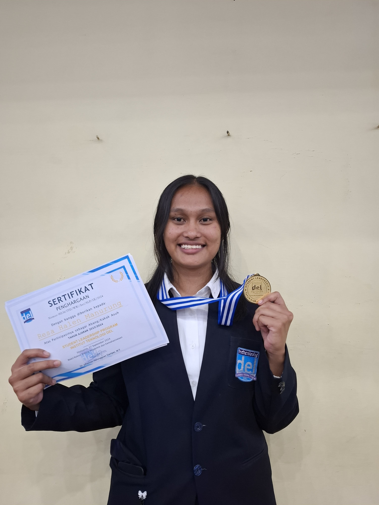

Resa Halen Manurung
Project Manager
About
Saya adalah seorang mahasiswa semester empat di jurusan Teknologi Informasi dari Institut Teknologi Del, yang memiliki aspirasi kuat dalam bidang manajemen proyek teknologi, khususnya dalam peran sebagai Project Manager. Dalam perjalanan akademik dan pengalaman saya, saya telah memperoleh pemahaman mendalam mengenai manajemen proyek, mulai dari perencanaan, pengorganisasian, hingga pelaksanaan proyek dengan fokus pada penyelesaian tepat waktu dan sesuai anggaran. Saya yakin bahwa peran Project Manager adalah kunci untuk mengarahkan tim mencapai tujuan yang telah ditetapkan dengan efisiensi dan hasil yang maksimal. Melalui berbagai proyek akademik dan kolaboratif, saya telah mengasah kemampuan dalam merencanakan dan mengorganisasi proyek secara terstruktur. Setiap proyek membutuhkan manajemen waktu yang ketat, alur komunikasi yang jelas, serta koordinasi antar tim yang optimal untuk memastikan bahwa setiap anggota bekerja secara sinkron. Sebagai seorang Project Manager, saya berfokus pada penyusunan timeline yang realistis, pemantauan progres secara berkala, serta identifikasi potensi risiko sejak awal. Hal ini memungkinkan saya untuk mengatasi masalah secara proaktif dan memastikan setiap aspek proyek berjalan dengan lancar. Saya memiliki keahlian dalam mengelola tim lintas fungsi, di mana saya memastikan setiap anggota tim memahami peran mereka dengan jelas dan memiliki dukungan yang dibutuhkan untuk menyelesaikan tugas mereka secara efektif. Saya percaya bahwa komunikasi yang baik adalah fondasi dari manajemen proyek yang sukses, karena dengan komunikasi yang terbuka, saya bisa menjaga motivasi tim serta memastikan bahwa setiap anggota merasa didengar dan dihargai. Selain itu, saya juga terbiasa membuat laporan kemajuan proyek yang rinci dan transparan, sehingga pemangku kepentingan dapat memantau setiap tahap perkembangan proyek dengan mudah. Selain kemampuan teknis, saya juga menguasai beberapa alat bantu manajemen proyek seperti Trello, Asana, dan Microsoft Project yang membantu saya dalam pengorganisasian tugas dan pelacakan progres. Dengan menggunakan alat-alat ini, saya dapat mengelola alokasi sumber daya, menilai pencapaian tiap tahapan, dan mengoptimalkan kinerja tim. Saya juga memiliki kemampuan analitis yang baik, yang membantu dalam membuat keputusan strategis berdasarkan data yang akurat dan relevan. Saya sangat antusias untuk terus berkembang di bidang ini dan siap berperan aktif dalam mengarahkan tim menuju keberhasilan proyek yang berdampak.
My Skills
Bahasa Pemrograman
- Java
- C/C++
- PHP
- SQL
- HTML
- CSS
- JavaScript
Alat Pengujian
- Selenium
- Cucumber
- Postman
- Katalon Studio
- Test Rail
Editor Kode & Alat Pemodelan
- Visual Studio Code
- Eclipse
- StarUML
- Bizagi
- PowerDesigner
- Draw.io
Alat Desain
- Figma
- Canva
Experience
Institut Teknologi Del - Laguboti | Agustus 2023 - September 2024
Program Kepemimpinan Mahasiswa - Membimbing dan mendampingi mahasiswa baru di tahun pertama, memberikan nasihat dan dukungan.
Institut Teknologi Del - Laguboti | Oktober 2023
Divisi Kesehatan Kaderisasi Himatif - Memfasilitasi kelancaran kegiatan kaderisasi, memastikan kesehatan semua peserta dan panitia.
Contact
Medan, Sumatera Utara
Telepon: +62 821 6768 7799
Email: resamanurung7@gmail.com